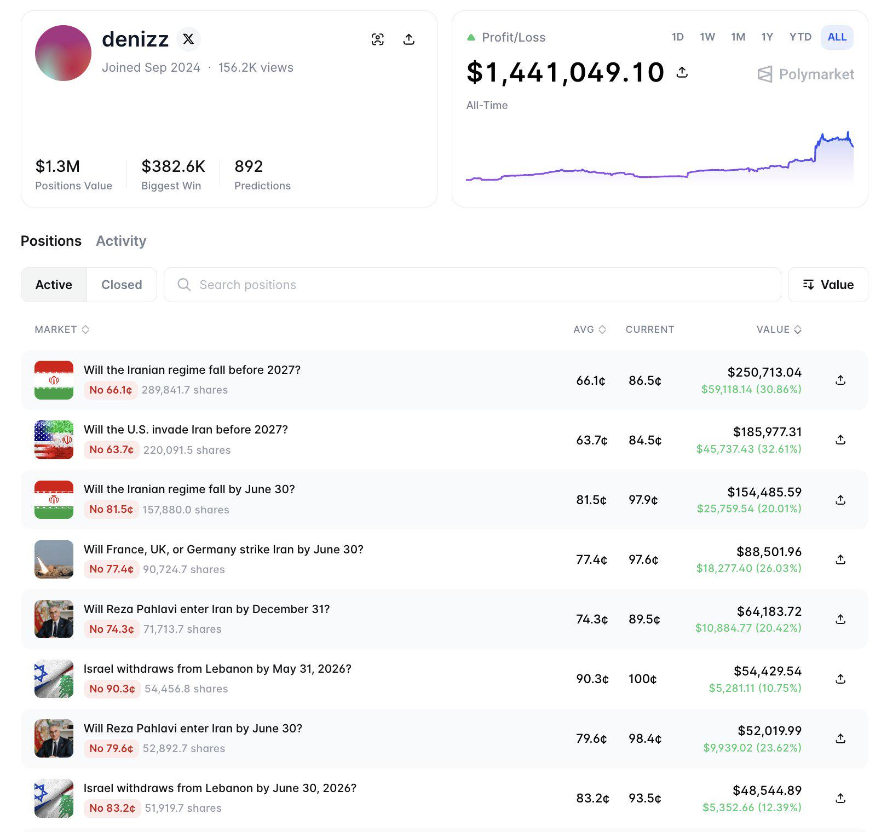

How denizz Turned $60K Into $1.4M on Polymarket: The Strategy Behind the Biggest "No" Trader

Every so often a profile shows up on the Polymarket leaderboards that doesn't look like the others. No dashboard full of models, no thread explaining a proprietary edge, no claim to inside information. Just a wallet called denizz, 892 predictions, and an all-time profit line that jumps from a slow crawl to a near-vertical spike in the last few weeks — sitting at $1,441,049.10 as of writing. Positions value alone is $1.3M, with a single biggest win of $382.6K.
Scroll through the active positions and the pattern is almost boring in how consistent it is. Every single one is a No.
- No on "Will the Iranian regime fall before 2027?" — bought at 66.1¢, now marked at 86.5¢
- No on "Will the U.S. invade Iran before 2027?" — bought at 63.7¢, now at 84.5¢
- No on "Will the Iranian regime fall by June 30?" — bought at 81.5¢, now resolved territory at 97.9¢
- No on "Will France, UK, or Germany strike Iran by June 30?" — 77.4¢ average, now 97.6¢
- No on "Will Reza Pahlavi enter Iran by December 31?" — 74.3¢ average, now 89.5¢
- No on Israel withdrawing from Lebanon, on two separate deadlines — both already trading near 100¢
There's no hedge in there. No small Yes position to balance the book. It's one directional bet, repeated across nearly every geopolitical flashpoint tied to Iran, made over and over again: the dramatic thing everyone is talking about will not actually happen by the date the market names.
The strategy, stated plainly
This isn't complicated, and that's kind of the point. When a geopolitical event dominates the news cycle — strikes, invasion chatter, regime-collapse speculation — prediction markets tend to overreact to it. Headlines create urgency. Urgency creates buyers. Buyers push the "dramatic outcome" price higher than the actual probability probably justifies, especially once you account for how narrow the time window usually is ("by June 30," "before 2027").
denizz's whole book is a bet against that overreaction. Buy No while the headline still feels live and the price hasn't caught up to how rarely regimes actually collapse, or invasions actually happen, inside a specific few-month window. Then wait. If the calendar just runs out without the dramatic thing occurring — which is the base rate outcome for almost all of these events — the No position walks to 100¢ on its own, no forecasting skill required beyond "most predicted collapses don't happen on schedule."
Why the numbers look so good right now
Look at the gap between the average cost and the current price on each position. The Iran regime-fall market moved from 66.1¢ to 86.5¢. The France/UK/Germany strike market moved from 77.4¢ to 97.6¢. The Lebanon withdrawal market is already sitting at 100¢. None of these needed the underlying event to resolve yet — the mark-to-market gain shows up simply because time passed and the dramatic outcome kept not happening. That's the mechanism. As deadlines get closer without the event occurring, a No position's price drifts toward 100¢ almost mechanically, and the unrealized profit compounds across every market running the same play at once.
That's also why the portfolio chart shows a slow, flat climb for most of its history and then a sharp spike near the end — several of these positions were likely opened months apart, but they're all converging toward resolution around the same stretch of headlines cooling off simultaneously.
Where this gets risky
It's worth being honest about the other side of this. Fading the headline works beautifully right up until the headline is correct. A No position bought at 66¢ on a regime-collapse market isn't free money — it's a bet with real, non-trivial odds of being wrong, and if the event does happen, that position doesn't decay gently to zero, it can gap there. Concentrating almost the entire book in one geopolitical theme (Iran, and by extension the broader Israel–Lebanon conflict) also means a single piece of real news — an actual strike, an actual collapse — doesn't just cost one position, it costs most of the portfolio at once. There's no diversification here to soften that.
The strategy is also, by nature, a bet on a fairly stable status quo. It has worked through a period where Iran-related tensions repeatedly spiked and repeatedly failed to escalate into the modeled outcome. That's a real, recurring pattern — but it's a pattern about the recent past, not a law of geopolitics.
The takeaway
You don't need a model to trade this way. You need a working theory about how markets misprice dramatic, deadline-bound outcomes, the patience to hold a position while the headline slowly stops being a headline, and enough conviction to stay concentrated in that thesis across many markets at once. That's the whole edge behind a 23x-style run: not predicting the future better than anyone else, just refusing to pay the "this time it's different" premium that news cycles keep attaching to prices.
Whether that's a repeatable strategy or a very good run through one unusually stable stretch of geopolitics is the actual question worth asking before copying it.
See denizz's live positions and P&L directly on Polymarket.